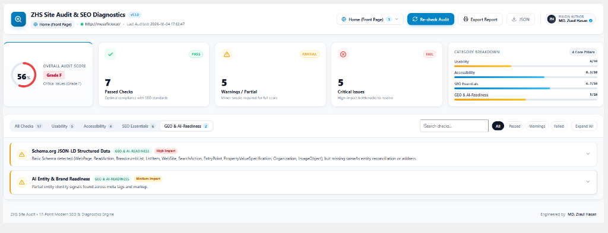

ZHS Site Audit & SEO Diagnostics 17-Point Modern Diagnostics Suite
A production-grade, modular WordPress website auditing and SEO analytics suite. Engineered with a modern SaaS dashboard interface, it evaluates your live website against a rigorous 17-point diagnostic framework spanning Core Web Usability, WCAG 2.4.1 Accessibility, Technical SEO Essentials, and Generative Engine Optimization (GEO / AI-Readiness).

Why ZHS Site Audit & SEO Diagnostics?
Unlike basic plugins that only inspect static post meta, ZHS Site Audit executes real-time DOM parsing, validates HTTP security headers, deep-parses Schema.org JSON-LD knowledge graphs, checks XML sitemaps, and analyzes indexable database content depth.
Zero External Cloud Overhead
All diagnostics, DOM parsing, and database queries execute 100% locally on your WordPress server. No third-party API calls, no customer telemetry, and zero tracking dependencies.
Multi-Page & Full Website Auditing
Audit your primary homepage or scan representative published pages and posts across your entire site simultaneously, with granular per-page issue breakdowns and selector controls.
Instant Asynchronous REST API
Execute live audits on demand via the WordPress REST API (/wp-json/zhs-audit/v1/) with transient 12-hour smart caching to eliminate redundant server load.
Generative Engine Optimization (GEO & AI-Readiness)
Evaluates Schema.org entity disambiguation, sameAs authority reconciliation, and cross-channel brand coherence so AI search engines (ChatGPT, Google Gemini, Perplexity) accurately identify and cite your business in AI Search 2.0.
Client Presentation Ready
1-click executive report export featuring print-optimized CSS for clean PDF delivery, plus structured JSON downloads for developers and agency client presentations.
The 17-Point Diagnostic Framework
ZHS Site Audit divides your site's health into four core strategic pillars, inspecting DOM markup, transport protocol, and knowledge graph signals.
HTTPS & SSL Transport Security
Checks active SSL/TLS protocol enforcement and inspects HTTP response headers for Strict-Transport-Security (HSTS) flags to ensure encrypted communication and protect browser trust signals.
Mobile Viewport Optimization
Validates responsive <meta name="viewport"> attributes in the document head and flags accessibility-blocking parameters like user-scalable=no or restricted maximum-scale=1.0.
Multi-Channel Contact Options
Scans the live DOM for clickable tel: telephone links, mailto: email protocols, social profile links, and interactive contact form blocks to maximize conversion readiness.
Entry Popup & Interstitials
Detects intrusive modal overlays, full-screen popups, and verifies the presence of accessible dismiss controls to prevent Google Mobile Interstitial penalties.
Footer Trust & Legal Links
Validates critical compliance links (Privacy Policy, Terms of Service) and flags placeholder dummy links (e.g. dead href="#" anchors) that degrade user trust.
Skip-to-Content Bypass Navigation
Verifies the presence of keyboard bypass navigation links allowing screen-reader and keyboard users to skip repetitive navigation directly to main content landmarks.
Image Alt Text Diagnostics
Audits all front-end images for missing alt tags, raw camera filename junk (e.g. IMG_001.jpg), and redundant title mirror duplicates that dilute visual accessibility.
Form Input Labels & ARIA Semantics
Verifies that all form inputs have explicit <label for="..."> pairings, aria-label, or aria-labelledby attributes rather than relying solely on ephemeral placeholders.
Heading Hierarchy (H1-H6 Progression)
Enforces exactly one semantic <h1> tag per page, prevents skipped heading levels (e.g. jumping from H2 directly to H4), and flags empty heading tags.
HTML Title Tag Optimization
Measures SERP character length against the optimal 50-60 character window to avoid mobile truncation, and flags generic default WordPress slogans like "Just another WordPress site".
Meta Description Snippet CTR
Evaluates SERP snippet length (optimal 140-160 characters) to ensure clear commercial intent, high organic click-through rates (CTR), and prevents snippet auto-generation by Google.
Canonical & Robots Indexing Flags
Validates self-referencing canonical URLs, inspects noindex or nofollow directives, and verifies that the WordPress "Discourage search engines" privacy setting is disabled on production.
Social Open Graph & Twitter Cards
Ensures social preview metadata (og:image, og:title, og:description, twitter:card) renders correctly for LinkedIn, WhatsApp, and Facebook shares.
XML Sitemap Reachability
Probes core WordPress and SEO plugin sitemap endpoints (/wp-sitemap.xml, /sitemap_index.xml) to ensure crawlability and index readiness for search engine spiders.
Indexable Content Depth & Word Count
Analyzes front-page text density, calculating total indexable text tokens and published database post depth to prevent algorithmic "thin content" ranking penalties.
Schema.org JSON-LD Knowledge Graph (Search 2.0)
Deep-parses embedded JSON-LD graphs for Organization, LocalBusiness, physical address objects, and verifies sameAs entity reconciliation links to social/knowledge bases for LLM attribution.
AI Entity & Brand Coherence Across Signals
Audits brand name consistency across site titles, Open Graph tags, Schema entities, and copyright notices so AI search engines (ChatGPT, Google Gemini, Perplexity) correctly synthesize entity answers.
Installation & Setup Guide
Deploy ZHS Site Audit directly to your WordPress website in less than 2 minutes. Zero configuration required out of the box.
/wp-admin).
Frequently Asked Questions
Everything you need to know about performance overhead, permissions, and GEO compatibility.
manage_options capability (typically site Administrators). All API routes are protected by capability checks and CSRF nonces (X-WP-Nonce).
sameAs profiles to help AI platforms recognize and cite your business.
Technical Metadata
Changelog — v1.0.0
- • Initial official release of ZHS Site Audit and SEO Diagnostics suite.
- • 17-point dynamic DOM and database audit engine across Usability, Accessibility, SEO Essentials, and GEO / AI-Readiness.
- • Multi-Page and Full Website Audit Selector with live filtering and granular per-page diagnostics.
- • Real-time asynchronous REST API integration with animated KPI meters and interactive status filters.
- • Executive printable report stylesheet and structured JSON export functionality.